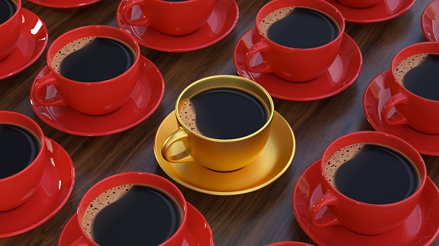
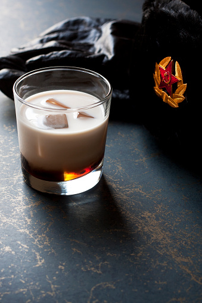

something larpy and leftist, ive honestly spent too much time on this exercise

fair trade coffe for the comrades.

Enjoy libations after hours when our cafe turns into a pub. No baby proles.
All our booze is stored using traditional cloth corks. Our rags are made from only the finest whicking materials.